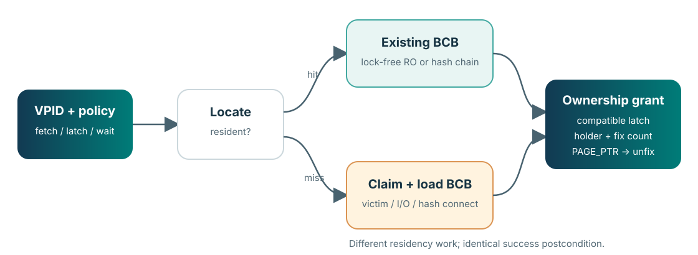

입력 5개
thread_p: holder/accounting과 wait contextvpid:(volid, pageid)identityfetch_mode: 어떤 page 상태가 허용되는가request_mode: READ 또는 WRITE latchcondition: 기다릴 수 있는가
pgbuf_fix() contract card코드 리뷰와 발표 중 한 장으로 확인하는 identity → residency → concurrency → ownership → release.
thread_p: holder/accounting과 wait contextvpid: (volid, pageid) identityfetch_mode: 어떤 page 상태가 허용되는가request_mode: READ 또는 WRITE latchcondition: 기다릴 수 있는가PAGE_PTR는 matching unfix까지 접근 가능하다.
resident 여부는 경로를 바꾸지만 성공 계약은 바꾸지 않는다.
VPID인가?fix는 durability 자체가 아니다.unfix는 보통 disk write가 아니다.fcnt == 0은 replacement eligibility의 필요조건이지 즉시 eviction 명령이 아니다.| Claim | Pinned source |
|---|---|
| debug/release macro boundary and five arguments | page_buffer.h:275–330 |
| validation, fast read path, hash lookup, miss claim | page_buffer.c:2246–2439 |
| BCB verification and latch/holder grant | page_buffer.c:2442–2516 |
| holder release, lock-free unfix, normal unlatch | page_buffer.c:3062–3203 |